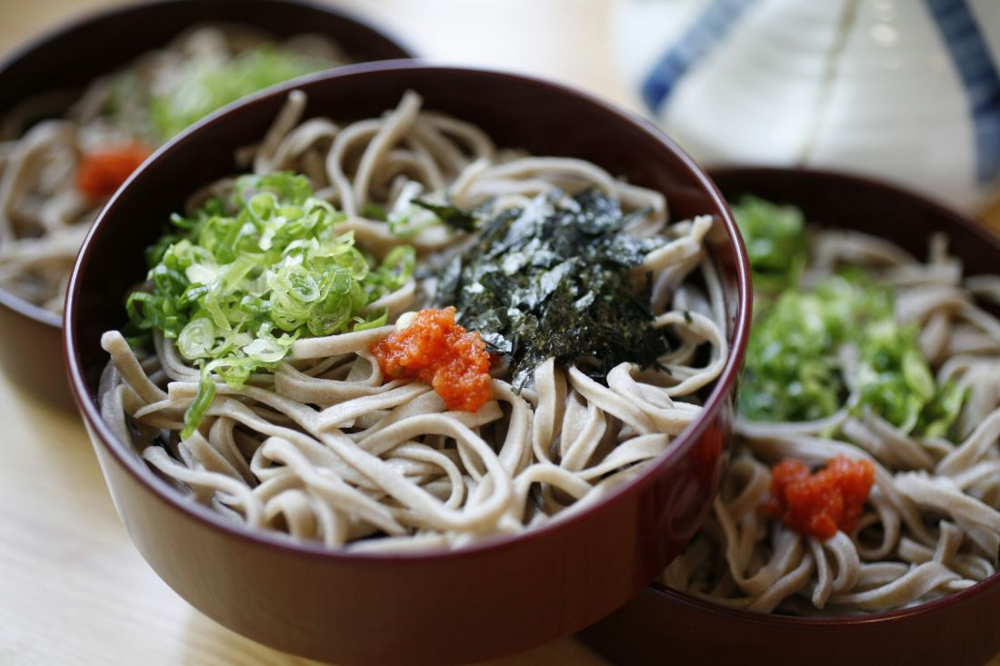

Things To Do
Food
Four Seasons
Ride the Ichibata train
Lakeside ride.
Reach Izumo Taisha
One of the oldest in Japan.
Lake Shinji Sunset
See the sunset on the way home.

Soba
Eat soba famous to the area.
Japanese Sweets
Sample the local wagashi.

Spring
See the sakura in the Spring.
Summer
Nearby beaches.
Autmn
Beautiful autumn foliage surround the breathtaking Mt Daisen.
Winter
A cold looking castle.